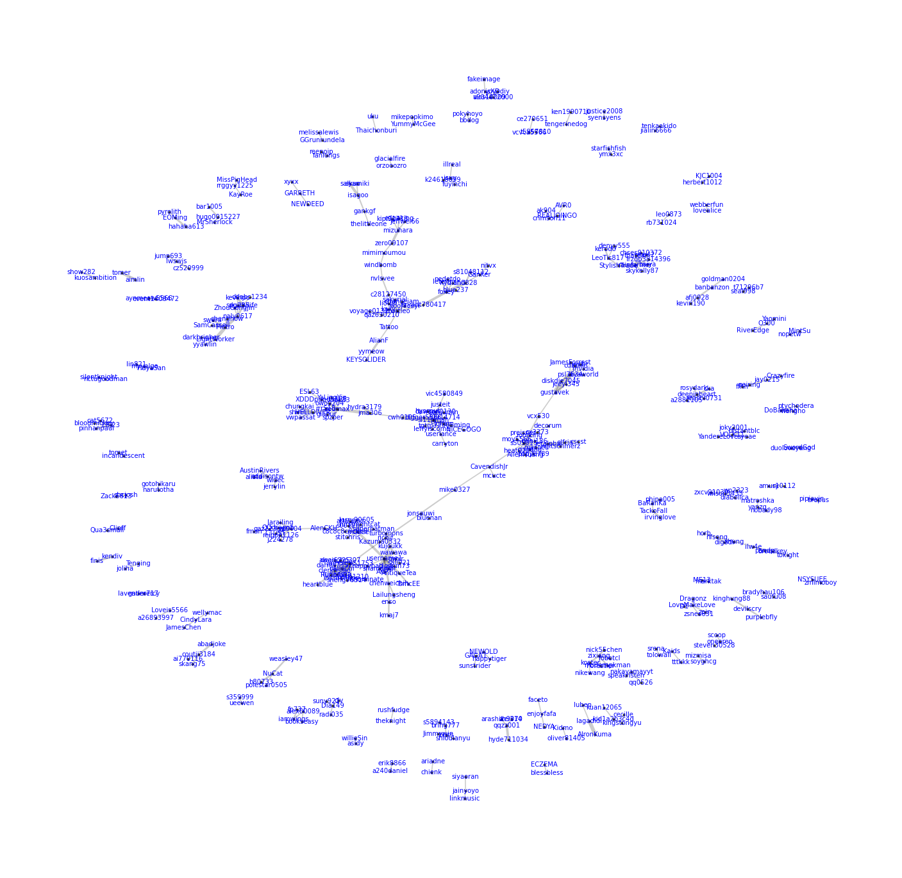
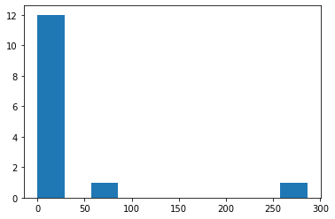
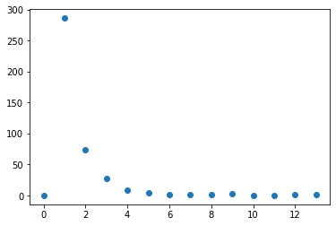
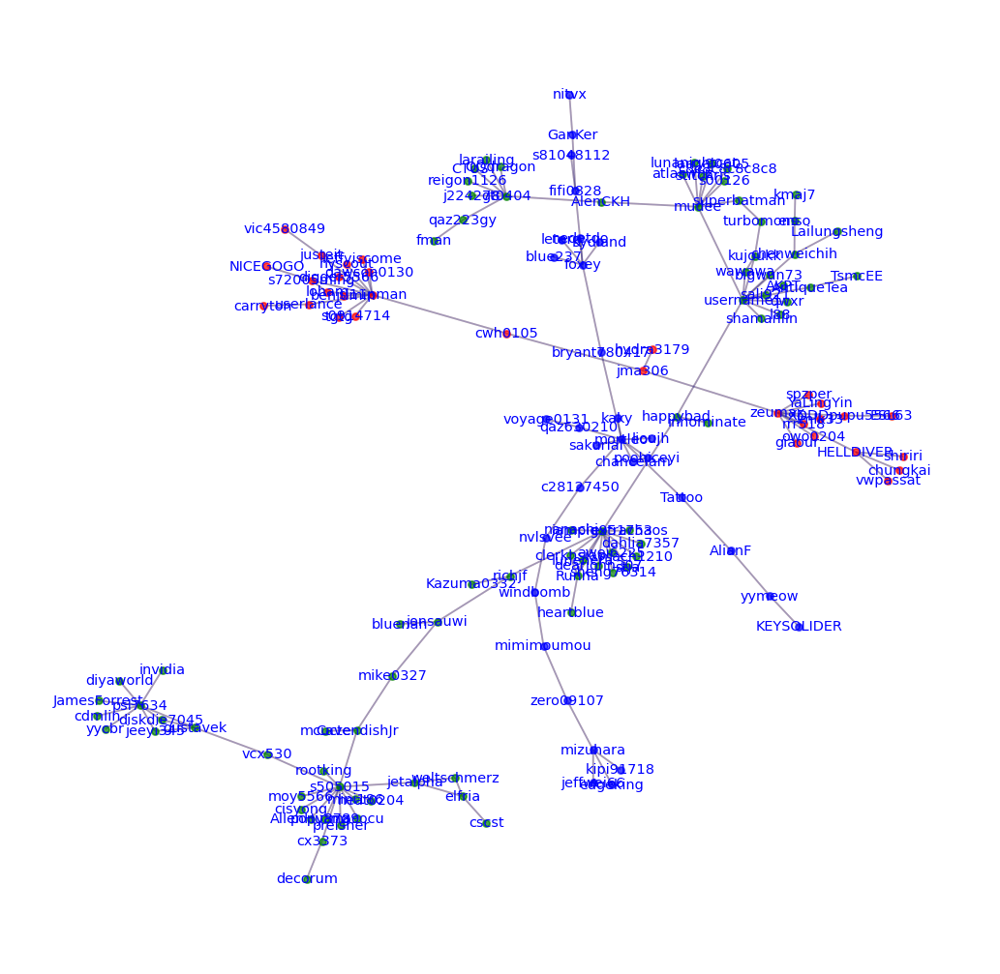
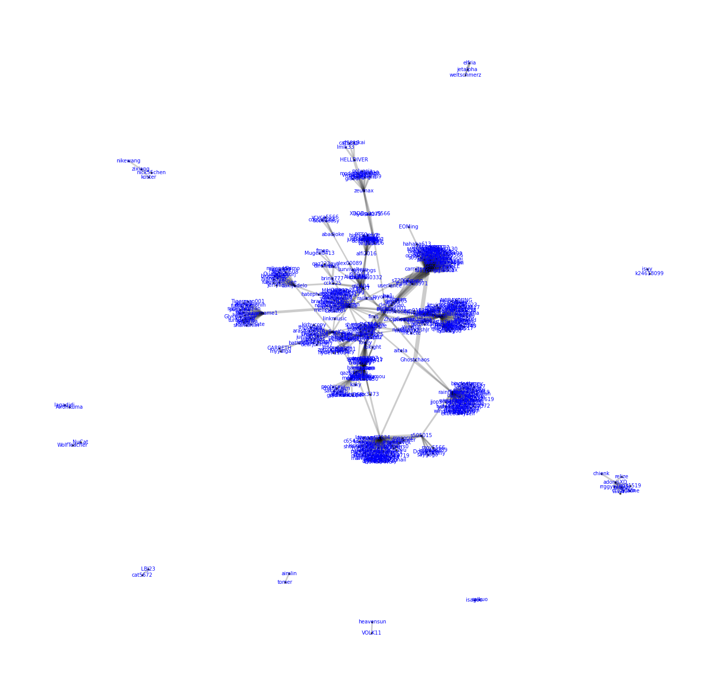
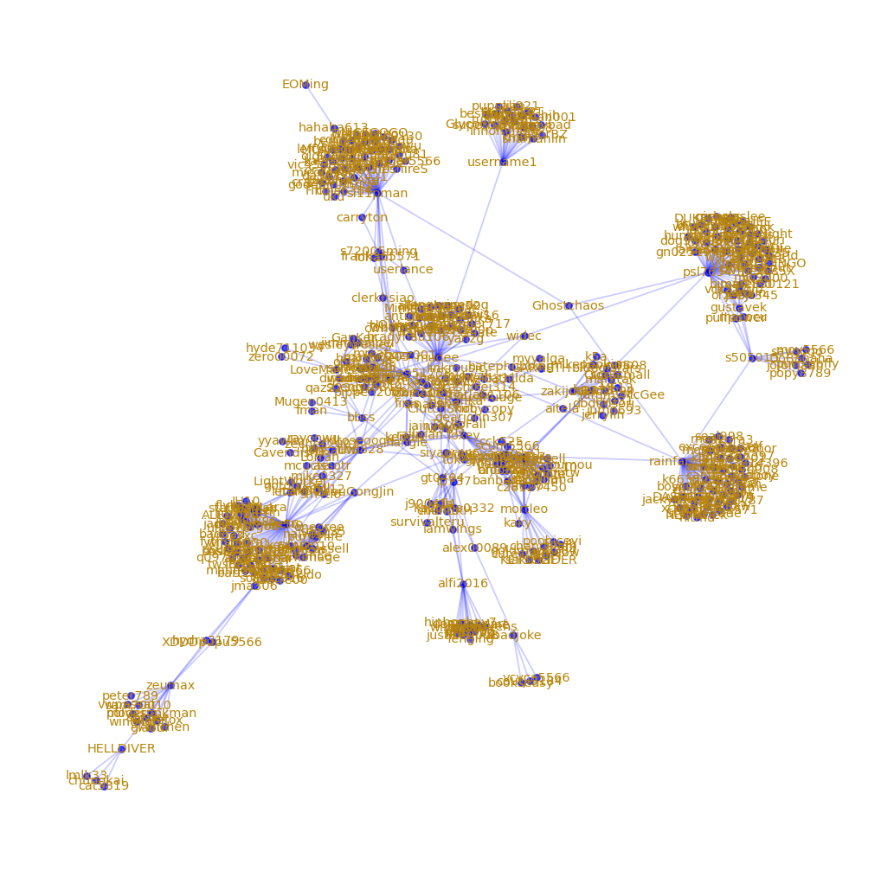
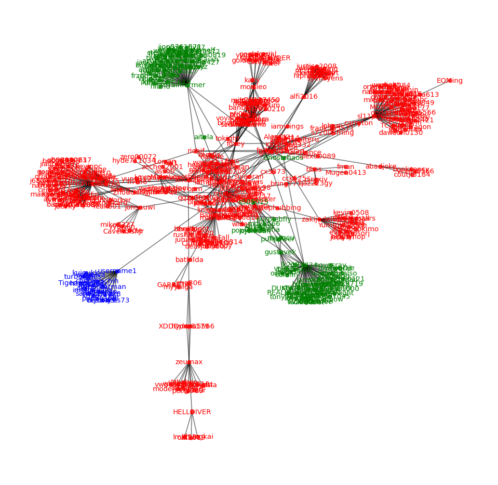

CSS01 Network Analysis#
Intro to network analysis in python by Trenton McKinney (Recommended!)
Network analysis for liquistics by AlvinChen (Good!)
igraph with python by Alvin Chen (Good!)
Text network analysis towarddatascience (Good!)
Building Network#
# colab
import pickle
!wget https://github.com/P4CSS/PSS/raw/master/data/pttpost_20210509_n178.dat -O pttpost_20210509_n178.dat
with open("pttpost_20210509_n178.dat", "rb") as fin:
all_post = pickle.load(fin)
--2023-12-02 15:47:02-- https://github.com/P4CSS/PSS/raw/master/data/pttpost_20210509_n178.dat
Resolving github.com (github.com)... 20.27.177.113
Connecting to github.com (github.com)|20.27.177.113|:443...
connected.
HTTP request sent, awaiting response...
404 Not Found
2023-12-02 15:47:03 ERROR 404: Not Found.
---------------------------------------------------------------------------
EOFError Traceback (most recent call last)
Input In [1], in <cell line: 4>()
3 get_ipython().system('wget https://github.com/P4CSS/PSS/raw/master/data/pttpost_20210509_n178.dat -O pttpost_20210509_n178.dat')
4 with open("pttpost_20210509_n178.dat", "rb") as fin:
----> 5 all_post = pickle.load(fin)
EOFError: Ran out of input
Collocation as Cooccurrence#
from collections import Counter
user_pair_counts = Counter()
len(all_post)
for post in all_post:
for i, c1 in enumerate(post['comments']):
for j, c2 in enumerate(post['comments']):
if j >= 0 and j != i and j > i-5 and j < i+5 :
u1, u2 = c1['userid'], c2['userid']
if u1 != u2:
user_pair_counts[(u1, u2)] += 1
for pair, c in user_pair_counts.most_common(10):
print("%s\t%s\t%d" % (pair[0], pair[1], c))
Runna iampig951753 32
iampig951753 Runna 32
psl7634 gustavek 21
gustavek psl7634 21
sl11pman cwh0105 16
cwh0105 sl11pman 16
username1 l88 15
l88 username1 15
AIronKuma lagadidi 14
lagadidi AIronKuma 14
li = [(u1, u2, n)for (u1, u2), n in user_pair_counts.most_common() if n > 3]
df = pd.DataFrame.from_records(li, columns =['u1', 'u2', 'n'])
df
| u1 | u2 | n | |
|---|---|---|---|
| 0 | Runna | iampig951753 | 32 |
| 1 | iampig951753 | Runna | 32 |
| 2 | psl7634 | gustavek | 21 |
| 3 | gustavek | psl7634 | 21 |
| 4 | sl11pman | cwh0105 | 16 |
| ... | ... | ... | ... |
| 667 | kingstongyu | cecille | 4 |
| 668 | kingstongyu | kid1a2b3c4d | 4 |
| 669 | kid1a2b3c4d | kingstongyu | 4 |
| 670 | kid1a2b3c4d | kuan12065 | 4 |
| 671 | kuan12065 | kid1a2b3c4d | 4 |
672 rows × 3 columns
Drawing network#
matplotlib & networkx#
import matplotlib.pyplot as plt
import networkx as nx
fig = plt.figure(1, figsize=(30, 30), dpi=60)
G = nx.from_pandas_edgelist(df,
source = 'u1',
target = 'u2',
edge_attr = 'n')
widths = nx.get_edge_attributes(G, 'n')
nodelist = G.nodes()
# nx.draw_kamada_kawai(G,
# node_size = 5,
# edge_color = "#8833FF",
# with_labels = True)
pos = nx.spring_layout(G)
# nx.draw_spring(G,
# node_size = 5,
# edge_color = "#8833FF",
# font_size = 16,
# with_labels = True)
nx.draw_networkx_nodes(G, pos,
nodelist=nodelist,
node_size=15,
node_color='black',
alpha=0.7)
nx.draw_networkx_edges(G,pos,
edgelist = widths.keys(),
width=list([w/2 for w in widths.values()]),
edge_color='black',
alpha=0.2)
nx.draw_networkx_labels(G, pos=pos,
labels=dict(zip(nodelist,nodelist)),
font_color='blue')
plt.box(False)
plt.show()

pyvis.network#
from pyvis.network import Network
net = Network('1024px', '2048px', notebook=True)
net.from_nx(G)
net.show("test.html")
Local cdn resources have problems on chrome/safari when used in jupyter-notebook.
Node-level analysis#
Reference
# !pip install networkx
# !pip install nxviz
import networkx as nx
import nxviz as nv
import matplotlib as mpl
import matplotlib.pyplot as plt
print(f'NetworkX version: {nx.__version__}')
print(f'Matplotlib version: {mpl.__version__}')
# print(f'NXViz version: {nv.__version__}')
NetworkX version: 2.7.1
Matplotlib version: 3.5.1
print(len(G.edges()))
print(len(G.nodes()))
336
410
Degree histogram#
dhist = nx.degree_histogram(G)
dhist
[0, 286, 74, 27, 8, 4, 1, 2, 1, 3, 0, 0, 2, 2]
plt.figure()
plt.hist(dhist)
plt.show()
plt.figure()
plt.scatter(range(0, len(dhist)), dhist)
plt.show()


Degree centrality#
dc = nx.degree_centrality(G)
bc = nx.betweenness_centrality(G)
cc = nx.closeness_centrality(G)
c_df = pd.DataFrame([(k, v, bc[k], cc[k]) for k, v in dc.items()], columns=["name", "degreeC", "betweenC", "closeC"])
c_df.sort_values("degreeC", ascending=False)
| name | degreeC | betweenC | closeC | |
|---|---|---|---|---|
| 56 | s505015 | 0.031785 | 0.019452 | 0.033651 |
| 1 | iampig951753 | 0.031785 | 0.024348 | 0.044203 |
| 4 | sl11pman | 0.029340 | 0.003715 | 0.028211 |
| 6 | username1 | 0.029340 | 0.022382 | 0.041179 |
| 16 | zeumax | 0.022005 | 0.003296 | 0.026512 |
| ... | ... | ... | ... | ... |
| 187 | goldman0204 | 0.002445 | 0.000000 | 0.003667 |
| 184 | MrSherlock | 0.002445 | 0.000000 | 0.003260 |
| 181 | awei6225 | 0.002445 | 0.000000 | 0.036138 |
| 179 | popy8789 | 0.002445 | 0.000000 | 0.028765 |
| 409 | kuan12065 | 0.002445 | 0.000000 | 0.003667 |
410 rows × 4 columns
Global network analysis#
nx.density(G)
0.004007394597173356
nx.number_connected_components(G)
89
max_component = sorted(nx.connected_components(G), key=len, reverse=True)[0]
max_subgraph = G.subgraph(max_component)
print(f"radius: {nx.radius(max_subgraph)}")
print(f"diameter: {nx.diameter(max_subgraph)}")
print(f"eccentricity: {nx.eccentricity(max_subgraph)}")
print(f"center: {nx.center(max_subgraph)}")
print(f"periphery: {nx.periphery(max_subgraph)}")
print(f"density: {nx.density(max_subgraph)}")
radius: 8
diameter: 16
eccentricity: {'fman': 16, 'stja': 10, 'superbatman': 13, 'AKPT': 12, 'jonsauwi': 9, 'larailing': 15, 'preisner': 13, 'turbomons': 13, 'wawawa': 12, 'diyaworld': 16, 'elfria': 14, 'username1': 11, 'bluenan': 10, 'iampig951753': 9, 'extrachaos': 10, 'mudee': 12, 'sali921': 12, 'rootking': 13, 'heat0204': 13, 'AntiqueTea': 12, 'Runna': 10, 'moy5566': 13, 'cx3373': 13, 'JamesForrest': 16, 'Kazuma0332': 9, 'cdmlin': 16, 'dahlia7357': 10, 'gustavek': 14, 'atlaswhz': 13, 'AlenCKH': 13, 'stitchris': 13, 'popy8789': 13, 'lunenera': 10, 'cisyong': 13, 'awei6225': 10, 'happybad': 10, 'gt0404': 14, 'chenweichih': 12, 'mike0327': 10, 'qwxr': 12, 'cscst': 15, 'psl7634': 15, 'AllenHuang': 13, 'diskdie7045': 15, 'CavendishJr': 11, 'TsmcEE': 13, 'CTUST': 15, 'weltschmerz': 14, 'larry90605': 13, 'reigon1126': 15, 'nanachi': 10, 'j224278': 15, 'kmaj7': 14, 'c8c8c8c8c8c8': 13, 'QQdragon': 15, 'jeeyi345': 15, 'mcucte': 12, 'mach1210': 10, 'dearjohn307': 10, 'yycbr': 16, 'heartblue': 11, 'macocu': 13, 'vcx530': 13, 'lunanightcat': 13, 'mini186': 13, 'bigwun73': 12, 'enso': 13, 'shamanlin': 12, 's00126': 13, 'qaz223gy': 15, 'l88': 12, 'decorum': 14, 'clerkhsiao': 10, 'invidia': 16, 'innominate': 11, 'richjf': 8, 'sheng76314': 10, 'Lailungsheng': 13, 'jetalpha': 13, 's505015': 12, 'kujoukk': 12}
center: ['richjf']
periphery: ['fman', 'diyaworld', 'JamesForrest', 'cdmlin', 'yycbr', 'invidia']
density: 0.026851851851851852
Components#
" ".join([str(len(conn)) for conn in sorted(nx.connected_components(G), key=len, reverse=True)])
'81 31 31 13 11 8 7 5 5 5 5 5 5 4 4 4 4 4 4 4 4 4 4 4 4 4 4 3 3 3 3 3 3 3 3 3 3 3 3 3 3 3 3 3 3 2 2 2 2 2 2 2 2 2 2 2 2 2 2 2 2 2 2 2 2 2 2 2 2 2 2 2 2 2 2 2 2 2 2 2 2 2 2 2 2 2 2 2 2'
Get top 3 components#
for nodelist in sorted(nx.connected_components(G), key=len, reverse=True)[:3]:
print(len(nodelist))
81
31
31
# top3_nodelists is just nodelists of top3 subgraph
top3_nodelists = sorted(nx.connected_components(G), key=len, reverse=True)[:3]
# Merge three nodelists
top3nodes = list(set().union(*top3_nodelists))
# top3nodes = []
# for nodelist in top3_nodelists:
# top3nodes.extend(list(nodelist))
# Retrieve Subset of G
subG = G.subgraph(top3nodes)
sorted(list(subG.nodes))
len(subG.edges)
len(subG.nodes)
# len(G.nodes)
# len(G.edges)
143
Viz by matplotlib#
fig = plt.figure(1, figsize=(10, 10), dpi=130)
colorlist = [ 'r', 'g', 'b', 'c', 'm', 'y', 'k' ]
pos = nx.spring_layout(subG)
for index, sg in enumerate(nx.connected_components(subG)): #there's probably a more elegant approach using zip
nx.draw_networkx_nodes(subG, pos=pos,
nodelist = sg,
node_size = 15,
node_color = colorlist[index],
alpha = 0.7)
nx.draw_networkx_labels(subG, pos=pos,
labels=dict(zip(sg,sg)),
font_color='blue',
font_size=8)
nx.draw_networkx_edges(subG, pos=pos,
edgelist = nx.get_edge_attributes(subG, 'n').keys(),
# width=list(nx.get_edge_attributes(subG, 'n').keys()),
edge_color=colorlist[index],
alpha=0.2)
plt.box(False)
plt.show()

Vis by pyviz#
attr = {node:index for index, sg in enumerate(nx.connected_components(subG)) for node in sg}
nx.set_node_attributes(subG, attr, name="group")
subG.nodes(data=True)
NodeDataView({'chungkai': {'size': 10, 'group': 0}, 'fman': {'size': 10, 'group': 1}, 'stja': {'size': 10, 'group': 1}, 'giaour': {'size': 10, 'group': 0}, 'superbatman': {'size': 10, 'group': 1}, 'AKPT': {'size': 10, 'group': 1}, 'jonsauwi': {'size': 10, 'group': 1}, 'owo0204': {'size': 10, 'group': 0}, 'cwh0105': {'size': 10, 'group': 0}, 'c28127450': {'size': 10, 'group': 2}, 'larailing': {'size': 10, 'group': 1}, 'preisner': {'size': 10, 'group': 1}, 'turbomons': {'size': 10, 'group': 1}, 'wawawa': {'size': 10, 'group': 1}, 'hydra3179': {'size': 10, 'group': 0}, 'diyaworld': {'size': 10, 'group': 1}, 'elfria': {'size': 10, 'group': 1}, 'sl11pman': {'size': 10, 'group': 0}, 'username1': {'size': 10, 'group': 1}, 'KEYSOLIDER': {'size': 10, 'group': 2}, 'bluenan': {'size': 10, 'group': 1}, 'hyscout': {'size': 10, 'group': 0}, 'iampig951753': {'size': 10, 'group': 1}, 'fifi0828': {'size': 10, 'group': 2}, 'loham': {'size': 10, 'group': 0}, 'digger5566': {'size': 10, 'group': 0}, 's0914714': {'size': 10, 'group': 0}, 'extrachaos': {'size': 10, 'group': 1}, 'mudee': {'size': 10, 'group': 1}, 'sali921': {'size': 10, 'group': 1}, 'rootking': {'size': 10, 'group': 1}, 'kipi91718': {'size': 10, 'group': 2}, 'heat0204': {'size': 10, 'group': 1}, 'kaky': {'size': 10, 'group': 2}, 'AntiqueTea': {'size': 10, 'group': 1}, 'AlianF': {'size': 10, 'group': 2}, 'Runna': {'size': 10, 'group': 1}, 'moy5566': {'size': 10, 'group': 1}, 'userlance': {'size': 10, 'group': 0}, 'cx3373': {'size': 10, 'group': 1}, 'kujoukk': {'size': 10, 'group': 1}, 'zeumax': {'size': 10, 'group': 0}, 'JamesForrest': {'size': 10, 'group': 1}, 'Kazuma0332': {'size': 10, 'group': 1}, 'cdmlin': {'size': 10, 'group': 1}, 'leffyiscome': {'size': 10, 'group': 0}, 'dahlia7357': {'size': 10, 'group': 1}, 'jma306': {'size': 10, 'group': 0}, 'gustavek': {'size': 10, 'group': 1}, 'poohiceyi': {'size': 10, 'group': 2}, 'atlaswhz': {'size': 10, 'group': 1}, 'AlenCKH': {'size': 10, 'group': 1}, 'stitchris': {'size': 10, 'group': 1}, 'popy8789': {'size': 10, 'group': 1}, 'Tattoo': {'size': 10, 'group': 2}, 'lunenera': {'size': 10, 'group': 1}, 'YaLingYin': {'size': 10, 'group': 0}, 'qaz630210': {'size': 10, 'group': 2}, 'lmlk33': {'size': 10, 'group': 0}, 'Kydland': {'size': 10, 'group': 2}, 'cisyong': {'size': 10, 'group': 1}, 'awei6225': {'size': 10, 'group': 1}, 'GanKer': {'size': 10, 'group': 2}, 'sakurial': {'size': 10, 'group': 2}, 'blue237': {'size': 10, 'group': 2}, 'ESL63': {'size': 10, 'group': 0}, 'tgtg': {'size': 10, 'group': 0}, 'happybad': {'size': 10, 'group': 1}, 'gt0404': {'size': 10, 'group': 1}, 'chenweichih': {'size': 10, 'group': 1}, 'mike0327': {'size': 10, 'group': 1}, 'qwxr': {'size': 10, 'group': 1}, 'cscst': {'size': 10, 'group': 1}, 'nvlsvee': {'size': 10, 'group': 2}, 'edgeking': {'size': 10, 'group': 2}, 'psl7634': {'size': 10, 'group': 1}, 'AllenHuang': {'size': 10, 'group': 1}, 'diskdie7045': {'size': 10, 'group': 1}, 'benjumin': {'size': 10, 'group': 0}, 'CavendishJr': {'size': 10, 'group': 1}, 'TsmcEE': {'size': 10, 'group': 1}, 'CTUST': {'size': 10, 'group': 1}, 'weltschmerz': {'size': 10, 'group': 1}, 'nitvx': {'size': 10, 'group': 2}, 'larry90605': {'size': 10, 'group': 1}, 'reigon1126': {'size': 10, 'group': 1}, 'spzper': {'size': 10, 'group': 0}, 'chanceiam': {'size': 10, 'group': 2}, 'nanachi': {'size': 10, 'group': 1}, 'j224278': {'size': 10, 'group': 1}, 'dawson0130': {'size': 10, 'group': 0}, 'kmaj7': {'size': 10, 'group': 1}, 'shiriri': {'size': 10, 'group': 0}, 'c8c8c8c8c8c8': {'size': 10, 'group': 1}, 'QQdragon': {'size': 10, 'group': 1}, 'jeeyi345': {'size': 10, 'group': 1}, 'lioujh': {'size': 10, 'group': 2}, 'vic4580849': {'size': 10, 'group': 0}, 'mcucte': {'size': 10, 'group': 1}, 'justeit': {'size': 10, 'group': 0}, 'mimimoumou': {'size': 10, 'group': 2}, 'windbomb': {'size': 10, 'group': 2}, 'mach1210': {'size': 10, 'group': 1}, 'dearjohn307': {'size': 10, 'group': 1}, 'yycbr': {'size': 10, 'group': 1}, 'heartblue': {'size': 10, 'group': 1}, 'macocu': {'size': 10, 'group': 1}, 'vcx530': {'size': 10, 'group': 1}, 's72005ming': {'size': 10, 'group': 0}, 'lunanightcat': {'size': 10, 'group': 1}, 'mini186': {'size': 10, 'group': 1}, 'bigwun73': {'size': 10, 'group': 1}, 'voyage0131': {'size': 10, 'group': 2}, 'enso': {'size': 10, 'group': 1}, 'mortleo': {'size': 10, 'group': 2}, 'NICEGOGO': {'size': 10, 'group': 0}, 'shamanlin': {'size': 10, 'group': 1}, 's00126': {'size': 10, 'group': 1}, 's81048112': {'size': 10, 'group': 2}, 'qaz223gy': {'size': 10, 'group': 1}, 'l88': {'size': 10, 'group': 1}, 'rrr518': {'size': 10, 'group': 0}, 'decorum': {'size': 10, 'group': 1}, 'clerkhsiao': {'size': 10, 'group': 1}, 'invidia': {'size': 10, 'group': 1}, 'innominate': {'size': 10, 'group': 1}, 'foxey': {'size': 10, 'group': 2}, 'richjf': {'size': 10, 'group': 1}, 'yymeow': {'size': 10, 'group': 2}, 'mizuhara': {'size': 10, 'group': 2}, 'zero09107': {'size': 10, 'group': 2}, 'bryant780417': {'size': 10, 'group': 2}, 'carryton': {'size': 10, 'group': 0}, 'HELLDIVER': {'size': 10, 'group': 0}, 'sheng76314': {'size': 10, 'group': 1}, 'nedetdo': {'size': 10, 'group': 2}, 'Lailungsheng': {'size': 10, 'group': 1}, 'jeffwei66': {'size': 10, 'group': 2}, 'leterg': {'size': 10, 'group': 2}, 'jetalpha': {'size': 10, 'group': 1}, 's505015': {'size': 10, 'group': 1}, 'XDDDpupu5566': {'size': 10, 'group': 0}, 'vwpassat': {'size': 10, 'group': 0}})
net = Network('1024px', '2048px', notebook=True)
net.from_nx(subG)
net.show_buttons(filter_=['physics'])
# net.show("test.html")
Local cdn resources have problems on chrome/safari when used in jupyter-notebook.
Community#
Build-up network#
from collections import Counter
user_pair_counts = Counter()
for post in all_post:
for i, c1 in enumerate(post['comments']):
for j, c2 in enumerate(post['comments']):
if j != i:
u1, u2 = c1['userid'], c2['userid']
if u1 != u2:
user_pair_counts[(u1, u2)] += 1
for pair, c in user_pair_counts.most_common(10):
print("%s\t%s\t%d" % (pair[0], pair[1], c))
li = [(u1, u2, n)for (u1, u2), n in user_pair_counts.most_common() if n > 10]
df = pd.DataFrame.from_records(li, columns =['u1', 'u2', 'n'])
df
s72005ming sl11pman 450
loham sl11pman 450
sl11pman s72005ming 450
sl11pman loham 450
cwh0105 sl11pman 360
sl11pman cwh0105 360
iampig951753 Runna 308
Runna iampig951753 308
frank355571 sl11pman 270
sl11pman frank355571 270
| u1 | u2 | n | |
|---|---|---|---|
| 0 | s72005ming | sl11pman | 450 |
| 1 | loham | sl11pman | 450 |
| 2 | sl11pman | s72005ming | 450 |
| 3 | sl11pman | loham | 450 |
| 4 | cwh0105 | sl11pman | 360 |
| ... | ... | ... | ... |
| 1483 | superbatman | username1 | 11 |
| 1484 | vwpassat | zeumax | 11 |
| 1485 | zeumax | vwpassat | 11 |
| 1486 | zeumax | giaour | 11 |
| 1487 | giaour | zeumax | 11 |
1488 rows × 3 columns
Drawing original network#
import math
import matplotlib.pyplot as plt
import networkx as nx
fig = plt.figure(1, figsize=(30, 30), dpi=60)
G = nx.from_pandas_edgelist(df,
source = 'u1',
target = 'u2',
edge_attr = 'n')
widths = nx.get_edge_attributes(G, 'n')
nodelist = G.nodes()
# nx.draw_kamada_kawai(G,
# node_size = 5,
# edge_color = "#8833FF",
# with_labels = True)
pos = nx.spring_layout(G)
# nx.draw_spring(G,
# node_size = 5,
# edge_color = "#8833FF",
# font_size = 16,
# with_labels = True)
nx.draw_networkx_nodes(G, pos,
nodelist=nodelist,
node_size=15,
node_color='black',
alpha=0.7)
nx.draw_networkx_edges(G,pos,
edgelist = widths.keys(),
width=list([math.sqrt(w) for w in widths.values()]),
edge_color='black',
alpha=0.2)
nx.draw_networkx_labels(G, pos=pos,
labels=dict(zip(nodelist,nodelist)),
font_color='blue')
plt.box(False)
plt.show()

Maximum component#
topG = sorted(nx.connected_components(G), key=len, reverse=True)[0]
len(topG)
subG = G.subgraph(topG)
Viz the maximum component#
fig = plt.figure(1, figsize=(10, 10), dpi=130)
colorlist = [ 'b', 'g', 'b', 'c', 'm', 'y', 'k' ]
pos = nx.spring_layout(subG)
for index, sg in enumerate(nx.connected_components(subG)): #there's probably a more elegant approach using zip
nx.draw_networkx_nodes(subG, pos=pos,
nodelist = sg,
node_size = 15,
node_color = colorlist[index],
alpha = 0.7)
nx.draw_networkx_labels(subG, pos=pos,
labels=dict(zip(sg,sg)),
font_color='darkgoldenrod',
font_size=8)
nx.draw_networkx_edges(subG, pos=pos,
edgelist = nx.get_edge_attributes(subG, 'n').keys(),
# width=list(nx.get_edge_attributes(subG, 'n').keys()),
edge_color=colorlist[index],
alpha=0.2)
plt.box(False)
plt.show()

Detect communities#
from networkx.algorithms import community
communities_generator = community.girvan_newman(subG)
top_level_communities = next(communities_generator)
second_level_communities = next(communities_generator)
print(len(top_level_communities))
print(len(second_level_communities))
2
3
Viz communities#
fig = plt.figure(1, figsize=(10, 10), dpi=130)
colorlist = [ 'r', 'g', 'b', 'c', 'm', 'y', 'k' ]
pos = nx.spring_layout(subG)
for index, sg in enumerate(second_level_communities): #there's probably a more elegant approach using zip
nx.draw_networkx_nodes(subG, pos=pos,
nodelist = sg,
node_size = 15,
node_color = colorlist[index],
alpha = 0.7)
nx.draw_networkx_labels(subG, pos=pos,
labels=dict(zip(sg,sg)),
font_color=colorlist[index],
font_size=8)
nx.draw_networkx_edges(subG, pos=pos,
edgelist = nx.get_edge_attributes(subG, 'n').keys(),
# width=list(nx.get_edge_attributes(subG, 'n').keys()),
# edge_color=colorlist[index],
alpha=0.2)
plt.box(False)
plt.show()

viz communities by pyvis#
# from pyvis.network import Network as net
from pyvis import network as net
# net = Network('1024px', '2048px', notebook=True)
attr = {node:index for index, sg in enumerate(second_level_communities) for node in sg}
nx.set_node_attributes(subG, attr, name="group")
visnet = net.Network('768px', '768px', notebook=True)
# net = Network('768px', '768px')
visnet.from_nx(subG)
visnet.show('nx.html')
Local cdn resources have problems on chrome/safari when used in jupyter-notebook.